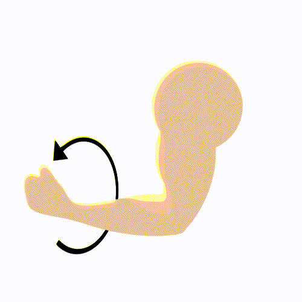

1
2
3
4
5
6
7
8
9
0
Q
W
E
R
T
Y
U
I
O
P
A
S
D
F
G
H
J
K
L
Ñ
Z
X
C
V
B
N
M
$%&
,
_
.
@
Gestos para interactuar con el teclado virtual
Los gestos para navegación en el teclado virtual se ejecutan mediante el el brazalete colocado en el antebrazo, mientras que los gestos de selección se ejecutan usando el dispositivo complementario. El brazalete cuenta con un LED indicador en color rojo que se enciende al regresar a la posición inicial de navegación.
|
Gesto Arriba Navegación del teclado hacia arriba |
Gesto Derecha Nagevegación en el teclado hacia la derecha |
Gesto Selección Selección del elemento seleccionado |
 Gesto Abajo Navegación en el teclado hacia abajo |
 Gesto Izquierda Navegación del teclado hacia la izquierda |
Gesto Borrado Borrado del último caracter ingresado |
Modo de uso
- Colocar el brazalete en el antebrazo para llevar a cabo los gestos de navegación
- Colocar el puntero en el software de entrada de texto
- Navegar en el teclado virtual y elegir un elemento con el gesto de selección usando el dispositivo
- Borrar el último caracter ingresado mediante el gesto de borrado usando el dispositivo